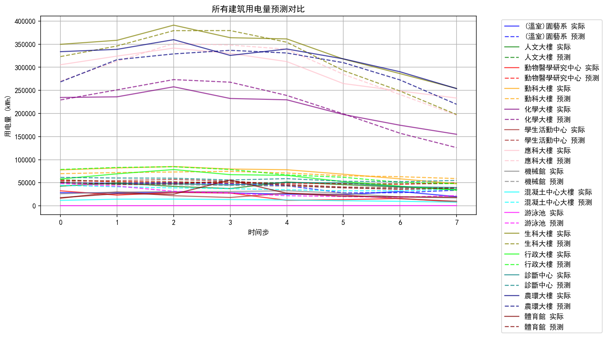
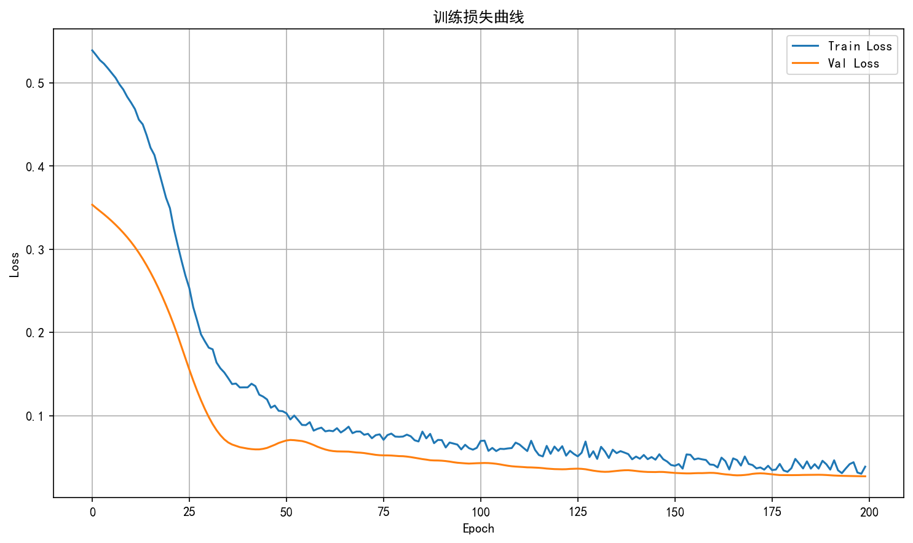
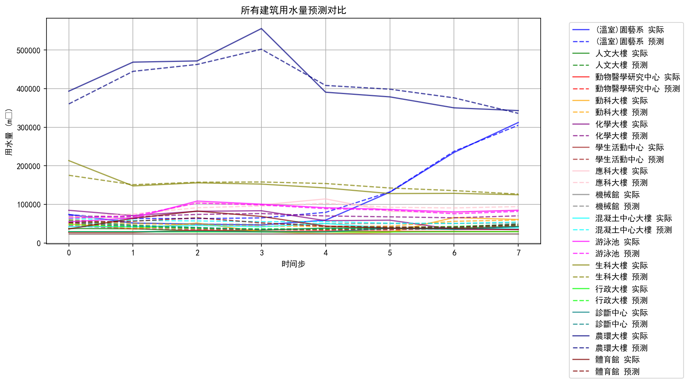
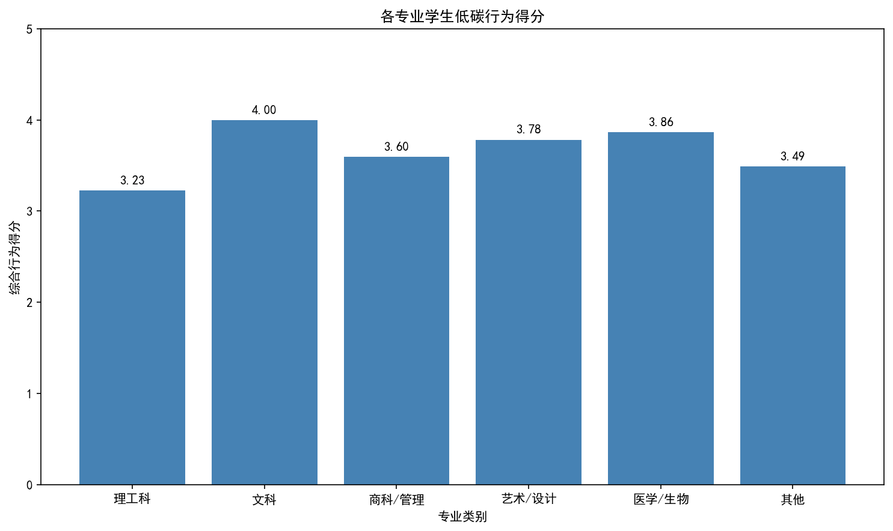

carbon-eye campus / defense deck
这套展示不强调技术名词，重点解释报表形成过程：数据从哪里来，前端怎么整理成图，老师最后能从图里看出什么。
最新时间步的楼栋状态总览
按时间汇总后的校园整体变化
专业低碳得分与行为影响权重
上传图片后生成行为分析卡片
part 01 / 楼栋怎么统计
30 + sqrt(本楼用电 / 全楼最大用电) × 46按 electricityActual 降序，取前 5((电误差 + 水误差) / (电实际 + 水实际)) × 100 × 0.45part 02 / 趋势和行为怎么统计
part 03 / 怎么形成展示闭环
楼栋、趋势、得分、行为规则、训练图统一整理。
做排序、归一化、偏差等级、饼图权重和展示卡片。
图片上传后生成任务，再返回行为名称、位置、置信度和影响说明。




对答辩老师来说，这一页最重要的结论是：系统展示的是一条完整链路，既能解释报表怎么来，也能说明这些统计结果最后如何支持分析和展示。